조경기사 (2016-05-08 기출문제)
1과목: 조경사
1. 그린스워드 계획(Greensward plan)의 특색이라고 볼 수 없는 것은?
- 정형적인 몰(mall)과 대로
- 입체적인 체계를 갖는 동선
- 외부 식재의 제거를 통한 차경
- 넓고 쾌적한 마차 드라이브 코스
(정답률: 79%)

2. 다음 정원 중 별서가 아닌 것은?
- 강릉의 방해정
- 담양의 식영정
- 구례의 운조루
- 화순의 임대정
(정답률: 73%)
3. 노자공(路子工)에 의해 궁궐 남정(南庭)에 수미산(須彌山)과 오교(?橋)가 조성된 시기는?
- 평성경시대(平聲京時代)
- 평안경시대(平安京時代) 전기
- 평안경시대(平安京時代) 후기
- 비조시대(飛鳥時代)
(정답률: 79%)
4. 옴스테드와 관령이 없는 사항은?
- 플랭클린 파크설계
- 그린스워드(Greensward)안
- 광역공원녹지체계의 아버지
- 요세미티 국립공원 건설을 위한 지도자
(정답률: 73%)
5. 삼국사기에 나타난 정원수 중 궁중에 쓰였던 수종은?
- 느티나무와 은행나무
- 복숭아나무와 남천
- 향나무와 사시나무
- 복숭아나무와 배나무
(정답률: 81%)
6. 조선시대 후원양식이라는 우리나라의 특수한 양식이 나타났는데 그 직접적인 원인이 된 것은?
- 유교의 도덕관
- 주역의 인성관
- 불교의 극락정토 신앙
- 풍수지리설에 따른 양택의 위치 결정
(정답률: 76%)
7. 버컨헤드(Birkenhead) 파크의 설명 중 맞지 않는 것은?
- 넓은 부지를 작은 공간으로 분할하는 수법을 주로 사용하였다.
- 일반 대중의 사용을 위해 시민의 힘과 재정으로 설계된 공원이다.
- 영국 내 수 많은 도시공원 조성의 경험이 집약되어 완성된 공원이다.
- 미국의 프레드릭 로 옴스테드(Fredrick Law Olmsted)의 공원개념 형성에 큰 영향을 주었다.
(정답률: 67%)
8. 백제 정림사지(址)에 관한 설명 중 가장 관계가 먼 것은?
- 1탑 1금당식
- 5층 석탑을 배치
- 원내 방지의 도입
- 구릉지 남사면에 위치
(정답률: 66%)
9. 다음 중 중세의 정원양식과 관련이 없는 것은?
- 하하(Ha Hah wall)
- 약초원(physic garden)
- 성곽 정원(walled garden)
- 수도원 정원(monastery garden)
(정답률: 85%)
10. 창덕궁 후원은 현존하는 궁궐 후원 가운데 가장 규모가 크다. 다음 중 공간별로 시대적 조성연대 순서가 맞는 것은?(단, 순서는 오래된 것부터 나열한다.)
- 옥류천 → 반월지 → 춘당대 → 부용지
- 부용지 → 반월지 → 옥류천 → 춘당대
- 춘당대 → 반월지 → 부용지 → 옥류천
- 춘당대 → 옥류천 → 반월지 → 부용지
(정답률: 57%)
11. 다음 중 고려 예종 때 궁 남서쪽 2곳에 설치한 것은?
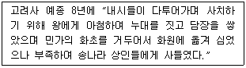
- 화원(花園)
- 임해전(臨海殿)
- 임류각(臨流閣)
- 부용지(芙蓉池)
(정답률: 81%)
12. 정원양식에 관한 다음 설명 중 틀린 것은?
- 파티오가 발달한 곳은 스페인이다.
- 프랑스 평면기하학식 양식은 이탈리아의 영향과는 관련이 없다.
- 영국 자연풍경식 정원은 풍경화와 당대 문학 작품 및 중국의 영향을 받았다.
- 이탈리아 노단건축 양식은 경사진 지형을 활용하여 조망 경관을 중요시 하였다.
(정답률: 83%)
13. 다음 중 자생식물로 야생정원을 조성해야 한다고 주장하여 근대 식재설계에 기여한 사람은?
- Lancelt Brown
- William Robinson
- William Kent
- Humphrey Repton
(정답률: 74%)
14. 보길도 윤선도 원림 낙서재에 위치한 지형지물로 고산의 시에 언급된 사령의 하나인 것은?
- 칠암
- 월암
- 석양
- 귀암
(정답률: 76%)
15. 다음 고대의 조경유형((造景類型)에서 그 의의를 현대적인 개념으로 설명한 것 중 틀린 것은?
- 고대 바빌론의 공중정원은 현대 옥상정원에서 그 의의를 찾을 수 있다.
- 고대 그리스의 아도니스원은 포트 가든(Pot garden)이나 윈도우 박스로 발달했다.
- 고대 로마의 포름은 현대 도시의 광장(plaza)으로 발달했다.
- 고대 앗시리아 수렵원은 현대 골프장의 시초가 되었다.
(정답률: 81%)
16. 토피어리(topiary) 에 관한 설명으로 옮지 않은 것은?
- 나무를 특정한 형태로 자르고 깎아 다듬는 기술이다.
- 영국에는 스튜어트 왕조에 유행하여 18세기의 풍경식 정원에서 전성기를 이루었다.
- 18세기 영국 정원에서 가장 즐겨 만들어진 것은 공작새의 생김새를 본 뜬 것이다.
- 고대 로마시대에 유행하였으며 주로 화단의 장식물이나 산 울타리를 대상으로 하였다.
(정답률: 71%)
17. 고려시대 격구(擊毬)를 즐겨, 북원(北園)에 격구장(擊毬場)을 설치한 왕은?
- 예종
- 의종
- 인종
- 명종
(정답률: 79%)
18. 네덜란드의 정원은 무엇으로 구획 지어진 작은 섬의 형태를 이루고 서로 다리에 의해서 이어지는가?
- 커낼
- 캐스케이드
- 폭포
- 창살울타리
(정답률: 79%)
19. 조선시대 선비들이 정원 동쪽 울타리 밑에 국화를 심은 이유로 가장 적합한 것은?
- 주돈이의 애련설의 재현
- 음양오행의 원리를 적용한 상징성 확보
- 왕희지의 난정고사에 의한 계획 모방
- 도연명의 안빈낙도 전원생활에 대한 동경과 흠모
(정답률: 76%)
20. 그라나다의 알함브라 궁전에 설치된 4개의 중정 가운데에서 비쟌틴의 영향을 받아 만들어졌으며 파라다이스 가든과 유사한 수로체계를 가지고 있는 중정은?
- 알베르카 중정
- 사자의 중정
- 란다라야 중정
- 사이프로스 중정
(정답률: 70%)
2과목: 조경계획
21. 이용자의 시각적 선호에 기초한 「경관미」 평가를 설명한 것 중 틀린 것은?
- 이용자의 지각과 판단과정이 중요하다.
- 이용자와 경관과의 상호관계를 이해할 수 있다.
- 조경계획 과정에서 이용자의 시각적 선호를 반영할 수 있다.
- 경관미가 경관자체에 내재되어 있어 경관특성의 설명으로 경관미를 평가할 수 없다.
(정답률: 84%)
22. 다음 중 도시지역 내 녹지지역에서의 허용되는 용적률(A)과 건폐율(B)을 차례로 나열한 것은?(단, 국토의 계획 및 이용에 관한 법률을 적용한다.)
- A : 50% 이하, B : 10% 이하
- A : 50% 이하, B : 20% 이하
- A : 100% 이하, B : 10% 이하
- A : 100% 이하, B : 20% 이하
(정답률: 59%)
23. 다음 중 공원의 최대일(最大日) 이용객 산정 내용으로 옳은 것은?
- 연간 이용객수 ÷ 365
- 연간 이용객수 × 최대일율
- 연간 이용객수 × 서비스율
- 연간 이용객수 × 회전율 × 최대일율
(정답률: 75%)
24. 사람들이 관광의 행위를 일으키는 데는 여러 가지 요인이 작용한다. 관광을 발생시키는 외적요인에 해당하지 않는 것은?
- 소득
- 욕구
- 여가시간
- 생활환경
(정답률: 79%)
25. 이용객 추정을 가장 바르게 설명한 것은?
- 일반적인 서비스율은 90% 수준에서 결정 한다.
- 사회적 수요와 생태적 수요 중 적은 수치를 적용한다.
- 최대시이용자수는 최대일이용자수에 최대일률을 곱하여 산출한다.
- 최대동시수용인원은 전체면적을 1인당 연간 이용면적으로 나누어 산출한다.
(정답률: 44%)
26. 관광지 및 관광단지의 개발에 대한 설명으로 옳지 않은 것은?
- 권역계획(圈域計劃)은 그 지역을 관할하는 시ㆍ도지사가 수립하여야 한다.
- 관광개발기본계획에는 관광권역(觀光圈域)의 설정에 관한 내용이 포함된다.
- 문화체육관광부장관은 전국을 대상으로 관광개발기본 계획을 수립하여야 한다.
- 관광지 및 관광단지는 기본계획과 권역계획을 기준으로 시장ㆍ군수 또는 구청장이 지정한다.
(정답률: 62%)
27. 다음 중 자연공원의 유형이 아닌 것은?
- 국립공원
- 도립공원
- 시립공원
- 지질공원
(정답률: 73%)
28. Friedman이 제시한 옥외공간의 설계평가 항목이 아닌 것은?
- 시공주
- 이용자
- 설계관련행위
- 물리, 사회적 환경
(정답률: 78%)
29. 다음 중 「지속 가능한 개발」의 개념으로 잘못된 것은?
- 개인 간, 집단 간, 세대 간의 형평성을 고려한다.
- 환경보존과 개발은 양립할 수 없다는 사고이다.
- 환경의 가치를 화폐가치로 환산하여 계획에 반영한다.
- 전 세대로부터 물려받은 규모의 환경자본을 다음 세대에 물려준다.
(정답률: 76%)
30. 다음 중 주택정원의 주정(general living)에 대한 설명으로 적합한 것은?
- 대문과 현관사이에 끼어 있는 공간이다.
- 가족의 휴식과 단란이 이루어지는 곳으로 가장 특색 있게 꾸밀 수 있는 곳이다.
- 대체로 실내공간과 침실과 같은 휴게공간과 연결되어 조용하고 정숙한 분위기를 갖는다.
- 주방, 세탁실, 다용도실, 저장고와 연결되어 있으며, 텃밭, 집기보관 장소 등이 있다.
(정답률: 74%)
31. 자연공원법령상 공원관리청이 공원구역에서 행위 허가를 함에 있어 공원심의위원회의 심의 거쳐야 하는 경우(기준)에 해당하지 않는 것은?
- 부지면적이 1천제곱미터 이상인 시설을 설치하는 경우
- 5천제곱미터 이상의 개간ㆍ매립ㆍ간척 그 밖의 토지형질변경을 하는 경우
- 도로ㆍ철도ㆍ궤도 등의 교통ㆍ운수시설을 1킬로미터 이상 신설하거나 1킬로미터 이상 확장 또는 연장하는 경우
- 만수면적이 10만제곱미터 이상이거나 총 저수용량이 100만세제곱미터 이상이 되는 댐ㆍ하구언ㆍ저수지ㆍ보 등 수자원개발사업을 하는 경우
(정답률: 61%)
32. 경계를 표시하는 상징적 요소인 담장이나 문주의 설치로 주민들에게 높은 소유의식을 부여하는 방법은 환경심리학의 어떤 연구 결과가 응용된 예인가?
- 혼잡(crowding)
- 반달리즘(vandalism)
- 영역성(territoriality)
- 개인적 공간(personal space)
(정답률: 78%)
33. 주택정원의 기능 분할(zoning)은 크게 전정(前庭), 주정(主庭), 후정(後庭) 및 작업(作業)공간으로 나누어질 수 있다. 다음 중 후정을 설명하고 있는 것은?
- 가족의 휴식과 단란이 이루어지는 곳이며, 가장 특색 있게 꾸밀 수 있는 장소이다.
- 장독대, 빨래터, 건조장, 채소밭, 가구집기, 수리 및 보관 장소 등이 포함될 수 있다.
- 실내 공간의 침실과 같은 휴양공간과 연결되어 조용하고 정숙한 분위기를 갖는 공간이다.
- 바깥의 공적(公的)인 분위에서 주택이라는 사적(私的)인 분위기로 들어오는 전이공간이다.
(정답률: 74%)
34. 경관생태적 조경계획에 있어서 생물 다양성은 경관의 여러 특성에 의해 결정되는 것으로 알려져 있다. 다음 경관의 특성 중 종 다양성과 부(-)의 상관을 가지는 특성은 무엇인가?
- 패취 면적
- 패취 연륜
- 매트릭스 이질성
- 패취 단절
(정답률: 68%)
35. 인간행태에 관한 개념 중 개인적 공간(personal space)에 대한 설명이 옳지 않은 것은?
- 가족이 함께 사용하는 사적(私的)인 공간을 말한다.
- 개인적 공간의 크기는 문화적 배경에 따라 차이가 있다.
- 개인적 공간의 크기는 내성적인 사람과 외향적인 사람 사이에 차이가 있다.
- 개인의 주변에 형성되는 보이지 않는 경계를 가진 공간을 말하며 외부인이 칩입하면 방어하는 공간을 말한다.
(정답률: 79%)
36. 조경 기본구상안의 발전단계에서 사용되는 부지상의 기능 다이어그램(Site-Related Functional Diagram)의 설명 중 옳지 않은 것은?
- 기능/공간 상호간의 관련성을 포함하여야 한다.
- 개념계획(concept plan)보다 상세하게 표현하여야 한다.
- 부지와 관련된 주요 기능/공간의 위치를 포함하여야 한다.
- 부지분석 도면을 중첩하여 기능/공간의 적절성을 검토할 수 있다.
(정답률: 77%)
37. 자연공원의 적정 수용력을 결정하는 방법 중 이용자가 만족스러운 경험을 갖기 위해서 일정 지역에 어느 정도의 인원을 수용하는 것이 적절할 것인가를 기준으로 삼는 수용력은?
- 물리적 수용력
- 생태적 수용력
- 심리적 수용력
- 특수 수용력
(정답률: 72%)
38. 관광 목적지 선택에 있어서 부부의사결정(spousal decision-making)에 대한 설명으로 틀린 것은?
- 제한요소의 역할은 개인수준의 의사결정 과정과 동일하다.
- 아내는 정보취합, 남편은 전체적인 의사결정 등 역할의 분화가 나타나기도 한다.
- 대부분의 경우 관광지 결정을 위한 토론 전에는 각자의 초기 고려대상지의 수는 적으며 토론을 통하여 늘어난다.
- 한 사람의 선호도나 경험보다는 부부간의 교류속에서 서로의 의견 차이나 갈등을 극복해 가는 과정을 통해 의사결정이 이루어진다.
(정답률: 72%)
39. 「도시공원 및 녹지 등에 관한 법률」시행규칙 상 공원시설의 설치면적 기준 중 체육공원에 설치되는 운동시설은 공원시설 부지면적의 몇 퍼센트 이상으로 하여야 하는가?
- 20
- 40
- 50
- 60
(정답률: 55%)
40. 다음 중 대통령령으로 정하는 기간의 기준으로 옳은 것은?
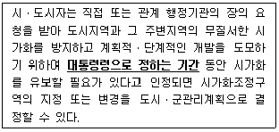
- 1년 이상 5년 이내
- 3년 이상 10년 이내
- 10년 이상 20년 이내
- 5년 이상 20년 이내
(정답률: 56%)
3과목: 조경설계
41. 조경설계기준에 의한 『조경포장』의 설명으로 옳은 것은?
- 조경시설에서 강성포장(rigid pavement)이란 아스팔트 콘크리트포장을 말한다.
- 간이포장이란 주로 차량의 통행을 위한 아스팔트콘크리트 포장과 콘크리트 포장을 말한다.
- 차도용 포장이란 차량의 최대 적재량에는 제한 없이 관리용 차량이나 모든 일반차량의 통행에 사용되는 도로의 포장을 말한다.
- 보도용 포장이란 보도, 자전거도, 자전거보행자도, 공원 내 도로 및 광장 등 주로 보행자에게 제공되는 도로 및 광장의 포장을 말한다.
(정답률: 64%)
42. 그림과 같은 입체도에서 화살표 방향을 정면으로 할 경우 평면도로 옳은 것은?
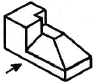
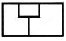
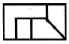
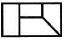
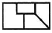
(정답률: 78%)
43. 밝은 곳에서 어두운 곳으로 들어갔을 때, 처음에는 제대로 보이지 않다가 시간이 지남에 따라 보이기 시작하는 현상은?
- 암순응
- 연색성
- 조건등색
- 푸르키니에 현상
(정답률: 79%)
44. 제도용 필기구에 대한 설명으로 틀린 것은?
- H의 숫자가 커질수록 단단하고 흐리다.
- 조경설계도면 작성에는 일반적으로 B가 많이 사용된다.
- 홀더는 굵은 선을 그릴 때 사용한다.
- 비가 오면 연필심이 상대적으로 흐리게 느껴진다.
(정답률: 68%)
45. 정원 구성재료 중 점(点)적인 요소가 아닌 것은?
- 벤치
- 병목(竝木)
- 분수
- 해시계
(정답률: 71%)
46. 경관의 시각적 평가방법 중 주로 사용하지 않는 것은?
- 전문가들에 의한 주관적인 평가 방법
- 사진, 슬라이드를 이용한 경관의 선호도를 평가하는 방법
- 디자이너의 현장답사에 의한 시각적 질을 측정하는 방법
- 어린이들에게 그림을 그리게 하여 순수한 경관적 가치를 파악하는 방법
(정답률: 76%)
47. 레크레이션 계획 시 수용력을 산정하려고 할 때 틀린 것은?
- 서비스율이란 연평균 시설의 실제 이용률이라 할 수 있다.
- 유희공간을 연간 30일 개장했고 30일 동안 고르게 방문객이 왔다면 최대일률은 1이다.
- 연 방문객수는 기후요인을 감안한 경험치를 사용하여 일방문객수와 일수를 산정하여 계산한다.
- 1일 중 가장 방문객이 많은 시점의 방문객수의 그날의 전체방문객에 대한 비율을 회전율이라 한다.
(정답률: 58%)
48. 규모와 비례에 대한 설명으로 틀린 것은?
- 규모는 ‘크기’를 말하며, 비례는 ‘상대적인 크기’를 뜻한다.
- 다른 요소에 비하여 커다란 규모는 시각적 강조를 나타낸다.
- 비례는 크기나 장단의 비를 말하며 균형과 직접적인 관계가 있다.
- 비례는 주로 정물화에만 국한된 것으로 무엇이 옳고 그른지에 대한 추상적 개념을 갖고 있다.
(정답률: 77%)
49. 시각적인 지각은 이전에 본 것과 이후에 본 것이 상호 연관되어 지각된다. 이 원칙은?
- Edge effect
- Sequence effect
- Contrast effect
- Gradation effect
(정답률: 70%)
50. 다음 환경자극과 반응에 대한 설명으로 틀린 것은?
- 일반적으로 지각과 인지는 연속된 하나의 과정으로 이해되어진다.
- 인지는 과거 및 현재의 외부적 환경과 현재 및 미래의 인간행태를 연관지어 주는 앎 혹은 지식을 얻는 다양한 수단을 말한다.
- 지각은 감각기관의 생리적 자극을 통하여 외부의 환경적 사물을 받아들이는 과정 혹은 행위를 말한다.
- 지각은 “아는 과정”을 강조하고 있고 인지는 “환경적 사물을 받아들이는 과정”을 강조하는 것이 보통이다.
(정답률: 74%)
51. 시각적 선호도 측정방법 중 정신생리 측정법에 대한 설명으로 옳은 것은?
- 심리적 상태에 따라 나타나는 생리적 현상을 측정하는 것이다.
- 여러 대상물을 2개씩 맞추어 서로 비교하는 방식을 사용한다.
- 주로 오스굳(Osgood)의 어의구별 척도를 사용한다.
- 이용자의 관찰시간 측정에 의한 주의집중 밀도 파악이 가능하다.
(정답률: 68%)
52. 도로설계에서 곡선부의 선형은 보통 원곡선을 사용한다. 다음 중 원곡선의 종류가 아닌 것은?
- 단곡선(Simple curve)
- 3차 포물선(Parabola)
- 배향곡선(Re-verse curve)
- 반향곡선(Hair-pin curve)
(정답률: 69%)
53. 기본계획안 작성 중 집행계획에 포함되지 않는 것은?
- 투자계획
- 법규검토
- 유지관리계획
- 이용 후 평가
(정답률: 69%)
54. 색관의 3원색(A)과 색료의 3원색(B)을 각각 모두 혼합하면 나오는 색의 연결이 옳은 것은?
- A : 흰색, B : 흰색
- A : 흰색, B : 검정
- A : 검정, B : 검정
- A : 검정, B : 흰색
(정답률: 80%)
55. 입ㆍ단면도의 특성에 관한 설명으로 틀린 것은?
- 절단면 뒤의 요소들은 그리지 않는다.
- 절단선은 강조가 되도록 굵고 두드러지게 표시한다.
- 가까운 대상물은 상세하게 굵은 선으로, 먼 곳의 대상물은 가는선으로 표현한다.
- 형태의 내부적인 상세나 수직ㆍ수평 요소들간의 관계가 입체적으로 표현된다.
(정답률: 69%)
56. 다음 중 [보기]가 설명하는 조경설계기준상의 배수 방법은?
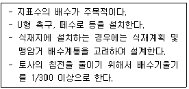
- 심토층배수
- 개거배수
- 암거배수
- 사구법
(정답률: 61%)
57. 포장이 갖는 기능적이며 구성적인 기능과 용도에 해당되지 않는 것은?
- 안정감을 창출한다.
- 공간의 성격을 단순화한다.
- 집약적인 이용을 수용한다.
- 공간의 규모에 영향을 미친다.
(정답률: 58%)
58. 그늘시렁(파고라)을 배치하고자 할 때 고려사항으로 틀린 것은?
- 휴게공간과 건물ㆍ보행로ㆍ운동장ㆍ놀이터 등에 배치하며, 보행 동선과의 마찰을 피한다.
- 여름에는 그늘을 제공하고 겨울에는 햇빛이 잘 들도록 대지의 조건, 방위, 태양의 고도를 고려하여 배치한다.
- 화장실, 급한 비탈면, 연약지반, 고합철탑이나 전선 밑의 위험지역, 외진 곳 및 불경한 곳을 피하여 배치한다.
- 비교적 긴 휴식에 이용되므로 휴지통, 공중전화부스, 음수대 등 관리시설과 이격 배치한다.
(정답률: 79%)
59. 조경설계기준상의 운동시설 중 족구장 관련 내용으로 틀린 것은?
- 경기장의 규격은 사이트라인 15m이며, 서브제한구역은 3m, 경기장 폭은 6.5m이다.
- 조명시설의 경우 일정한 조도보다 조금 높게 유지하고, 직접조명 방식을 사용한다.
- 안테나 높이는 1.5m이며, 안테나 이격거리는 사이드라인에서 21cm(공 지름간격)이다.
- 경기장은 장애물이 없는 평면으로서 각 라인으로부터 5m 이내에는 어떠한 장애물도 없어야 하며, 가능한 한 사이드 쪽은 6~7m, 엔드라인 쪽은 8m 이상을 이격한다.
(정답률: 68%)
60. 다음 중 파선(숨은 선)의 사용방법으로 옳은 것은?
- 단면도의 절단면을 나타낸다.
- 대상물의 보이는 부분의 겉모양을 표시한다.
- 물체의 보이지 않는 부분을 표시하는 선이다.
- 물체의 부분생략 또는 부분단면의 경계를 표시한다.
(정답률: 75%)
4과목: 조경식재
61. 잔디류 중 다음 [보기]에서 설명하는 것은?
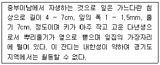
- Zoysia matrella
- Zoysia japonica
- Zoysia tenuifolia
- Kentucky bluegrass
(정답률: 50%)
62. 튜울립나무의 과명은?
- 현삼과
- 버즘나무과
- 백합과
- 목련과
(정답률: 49%)
63. 표층토(表層土)에 많이 함유된 부식층(腐植層)이 하는 작용으로 맞지 않는 것은?
- 유기물이 분해를 촉진시킨다.
- 토양의 물리적 성질을 양호하게 한다.
- 양분을 흡수, 보유하는 능력을 향상시킨다.
- 배수력을 높여주어 보수량을 낮게 해준다.
(정답률: 78%)
64. 나무의 모양과 크기, 식재간격이 같지 않고, 또한 일직선을 이루지 않도록 손에 잡히는대로 심어가는 식재수법은?
- 배경식재
- 임의식재
- 교호식재
- 사실적식재
(정답률: 80%)
65. 조경설계기준에서 인공지반에 식재된 대관목의 생육에 필요한 식재 최소 토심 기준은?(단, 자연토양을 사용하고, 배수경사는 1.5~2.0%이다.)
- 30cm
- 45cm
- 70cm
- 90cm
(정답률: 53%)
66. 다음 중 상록활엽수로 분류되는 것은?
- 옻나무(Rhus verniciflua Stokes)
- 팥배나무(Sorbus alnifolia K.Koch)
- 차나무(Camellia sinensis L.)
- 오미자(Schisandra chinensis Baill)
(정답률: 70%)
67. 다음 [보기]의 설명에 해당하는 육상식물군집의 생산성 측정법은?
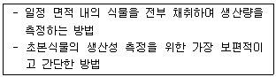
- 수확법
- 동화챔버법
- 상대생장법
- 영구방형구법
(정답률: 76%)
68. 다음 중 식재비탈면에 교목을 식재할 경우 가장 안정적인 기울기 조건은?
- 1 : 1.5
- 1 : 2
- 1 : 3
- 1 : 4
(정답률: 53%)
69. 다음 [보기]의 설명에 해당하는 초본류는?
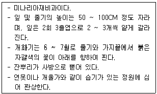
- 원추리
- 매발톱꽃
- 맥문동
- 술패랭이
(정답률: 52%)
70. 다음 중 중부이북지방에서 식재하면 동해 등의 생육상 장해를 받기 쉬워 가급적 식재를 하지 아니하여야 할 수종은?
- Machilus thunbergii
- Magonlia denudata
- Magnolia liliifloea
- Magnolia sieboldii
(정답률: 46%)
71. 다음 중 수목식재시 이용되는 지주재의 설명으로 틀린 것은?
- 노끈, 새끼중 등의 결속재료는 잘 짜여 진 튼튼한 것으로 결속 후 쉽게 풀리지 않는 것으로 한다.
- 지주재는 통나무나 각재 또는 대나무 등을 사용하며, 특별히 고안된 지주를 사용할 수 있다.
- 지주용 통나무는 마구리를 가공하고, 절단면과 측면만을 다듬어 사용한다.
- 지주목용 대나무로 1년생의 것이 사용하기에 가장 좋으며, 강도가 뛰어나고 썩거나 벌레먹음, 갈라짐 등이 없어야 한다.
(정답률: 65%)
72. 4월에 잎이 피기 전에 적자색의 꽃이 개화하여 화색(化色)배합에 중요하게 취급되는 수종은?
- Cercis chinensis
- Albizia julibrissin
- Styrax japonicus
- Koelreuteria paniculata
(정답률: 55%)
73. Odum의 『생태적 천이(ecological succession)』에서 성숙단계에 도달할수록 기대되는 특성으로 옳지 않은 것은?
- 군집의 안정성이 낮아진다.
- 전체 유기물의 양이 많아진다.
- 생태적 지위의 특수화가 좁아진다.
- 층위형성과 공간적 이질성에 대한 조직화가 충분히 이루어진다.
(정답률: 75%)
74. 자동차 배기가스에 가장 약한 침엽수는?
- Magnolia liliiflora
- Chamaecyparis obtusa
- Nerium indicum
- Cercis chinensis
(정답률: 39%)
75. 다음 중 은행나무에 대한 설명이 틀린 것은?
- 학명은 Ginkgo biloba L 이다.
- 중기는 회갈색이고 수피는 갈라진다.
- 황색 종이로 싸인 행과상이며 8~10월에 성숙한다.
- 꽃은 짧은 가지에 달리며 일가화(一家花)로서 3월에 개화하고, 그 다음 잎이 핀다.
(정답률: 78%)
76. 다음 중 다층식생구조로 가장 안정적인 구성은?(단, 교목 - 관목 - 지피의 순서 위치를 따른다.)
- 조팝나무 군락 - 조릿대 군락 - 맥문동 군락
- 상수리나무 군락 - 억새 군락 - 대나무 군락
- 굴참나무 군락 - 무궁화 군락 - 조팝나무 군락
- 느티나무 군락 - 개나리 군락 - 맥문동 군락
(정답률: 79%)
77. 바닷가 마을에 식재하는 수종으로 옳지 않은 것은?
- Pinus thunbergii Parl
- Euonymus japonica Thunb.
- Koelreuteria paniculata Laxmann
- Betula platyphylla var. japonica Hara
(정답률: 61%)
78. 산딸나무에 대한 설명이 아닌 것은?
- 열매는 구형의 취과이다.
- 과명은 층층나무과이다.
- 학명은 Cornus alba 이다.
- 꽃은 5월에 흰꽃으로 개화한다.
(정답률: 58%)
79. 다음 ( ) 안에 가장 적합한 용어는?
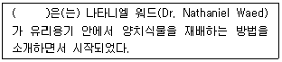
- 테라리움(Terrariums)
- 디쉬가든(Dish Gaeden)
- 토피아리(Topiary)
- 트렐리스(Trellis)
(정답률: 78%)
80. 조경수목의 성상과 해당 수목의 연결이 틀린 것은?
- 상록활엽관목 - 사철나무
- 상록활엽교목 - 고광나무
- 낙엽활엽교목 - 노각나무
- 낙엽활엽관목 - 낙상홍
(정답률: 55%)
5과목: 조경시공구조학
81. 잔디밭에 살수기를 그림과 같이 정삼각형의 4m 간격으로 배치하였다면
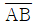
는 어느 정도 간격을 유지해야 하는가?(단, 결과값은 소수점 3째자리에서 올림한다.)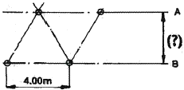
- 약 4.08m
- 약 3.47m
- 약 3.20m
- 약 3.28m
(정답률: 69%)
82. 그림의 면적을 심프슨 제2법칙을 이용하여 구한 값은?(단, 지거의 간격은 5m로 일정하다.)
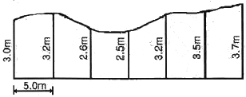
- 90.25m2
- 92.25m2
- 94.25m2
- 96.25m2
(정답률: 48%)
83. 평판측향의 특징으로 옳지 않은 것은?
- 외업에 많은 시간이 소요된다.
- 고저측량이 쉽게 행해진다.
- 기계의 조작과 측량 방법이 간단하다.
- 기후의 영향을 많이 받아 비가 오는 날이나 바람이 강한 날에는 측량이 곤란하다.
(정답률: 64%)
84. 지표면의 유출량에 큰 영향을 주는 요인으로 배수를 결정하는 요소가 아닌 것은?
- 토지이용
- 토양형태
- 토양산도
- 배수지역경사
(정답률: 69%)
85. 공원이나 골프장의 우수유출계수(雨水流出係數)는?
- 0.10 ~ 0.25
- 0.30 ~ 0.45
- 0.50 ~ 0.65
- 0.70 ~ 0.85
(정답률: 61%)
86. 등고선의 성질에 대한 설명으로 옳지 않은 것은?
- 동인 등고선상의 모든 점은 같은 높이이다.
- 등고선의 간격은 급경사지에서는 좁고 완경사지에서는 넓다.
- 등고선 간의 최단거리 방향은 그 지표면의 최소경사 방향이다.
- 등고선은 등경사지에서 등간격이며 등경사 평면인 지표에서는 등간격의 평생선을 이룬다.
(정답률: 73%)
87. 표준품셈을 적용하여 기계화 시공으로 식재공사를 할 경우 지주목을 세우지 않을 때는 인력품의 몇 %를 감하는가?
- 3%
- 5%
- 10%
- 20%
(정답률: 65%)
88. 시공계획의 작성순서를 조합한 것 중 가장 적당한 것은?
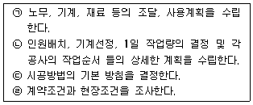
- ㉣ → ㉢ → ㉡ → ㉠
- ㉢ → ㉣ → ㉡ → ㉠
- ㉣ → ㉢ → ㉠ → ㉡
- ㉢ → ㉣ → ㉠ → ㉡
(정답률: 45%)
89. 다음 중 구조물을 역학적으로 해석하고 설계하는 데 있어, 우선적으로 산정해야 하는 것은?
- 구조물에 작용하는 하중 산정
- 구조물에 발생하는 반력 산정
- 구조물에 작용하는 외응력 산정
- 구조물 단면에 발생하는 내응력 산정
(정답률: 75%)
90. 한중콘크리트에 관한 설명으로 틀린 것은?
- 하루의 평균기온이 4℃ 이하가 예상되어 콘크리트가 동결할 염려가 있을 때 적용한다.
- 단위수량은 초기동해를 적게 하기 위하여 소요의 워커빌리티를 유지할 수 있는 범위 내에서 되도록 적게 한다.
- 먼저 가열한 시멘트와 굵은 골재, 다음에 잔골재를 넣어서 믹서 안에 재료 온도가 40℃ 이하가 된 후, 마지막으로 물을 넣는 것이 좋다.
- 물-결합재비는 원칙적으로 60퍼센트 이하로 하여야 한다.
(정답률: 68%)
91. 배수계통 중 지형이 한 방향으로 집중되어 경사를 이루거나 하수처리 관계상 하수를 한 방향으로 유도시킬 때 이용되는 것은?
- 차집식(interceping system)
- 선형식(fan system)
- 방사식(radial system)
- 직각식(rectangular system)
(정답률: 57%)
92. 그림과 같은 외팔보의 고정점 A에서 0.5m 떨어진 단면에 작용하는 굽힘 모멘트의 크기는 몇 kNm인가?
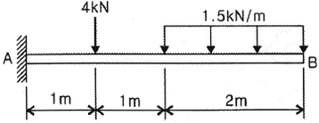
- 3.5
- 6.5
- 9.5
- 12.5
(정답률: 33%)
93. 다음 그림의 옹벽에 관한 설명으로 옳은 것은?(단, B의 각은 안식각 또는 휴식각이라 한다.)
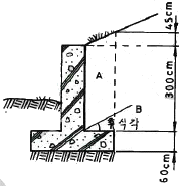
- 무근 콘크리트 구조이다.
- 4m 이하의 높이에 유리한 구조다.
- 하중은 옹벽 높이 1/3지점인 1.2m 지점에 수평방향으로 작용한다.
- 캔틸레버 옹벽으로 중력식 옹벽보다 구조상 유리한 단면이다.
(정답률: 62%)
94. 대지를 고르기 위해 사각형으로 분할(40m × 40m)하고 각 사각형의 모서리의 높이를 구하였더니 그림과 같다. 평탄하게 정지하였을 때 정지면의 높이로 맞는 것은?(단, 정지작업으로 인한 토량의 변화는 없는 것으로 간주한다.)
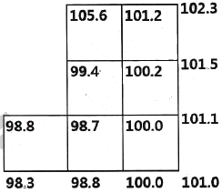
- 102.57m
- 102.07m
- 101.57m
- 100.25m
(정답률: 40%)
95. 도로의 수평노선에서 곡선반경이 20m 이고, 접선장의 교각이 30°일 때 곡선장은?
- 1.67m
- 5.24m
- 10.47m
- 12.14m
(정답률: 53%)
96. 시방서에 관한 설명으로 옳지 않은 것은?
- 작성방법에 따라 표준시방서와 특기시방서로 구분된다.
- 시공순서에 따라 빠짐없이 기재하고, 중복되지 않고 간단명료하게 작성한다.
- 재료에 필요한 시험, 재료의 종류 및 품질, 건물인도시기, 총공사비 등을 기재한다.
- 계약서와 설계도면에 표현하기 어려운 공사이행에 관련한 일반사항과 특이사항을 기재하여 도면과 함께 공사의 지침이 되도록 작성되는 설계도서의 일종이다.
(정답률: 57%)
97. 도장(塗裝)공사에 사용되는 도장재료 중 도료의 원료에 대한 설명으로 틀린 것은?
- 건조제(dryer)는 건조된 도막에 탄성, 교착성, 가소성 등을 주어 내구력을 증가시키는데 쓰이는 것이다.
- 수지(Resin)는 용제나 유지에 용해되어 있으나 도장 후에는 도막의 일부가 되는 것으로서 천연수지와 합성수지로 대별된다.
- 용제(solvent)는 도막의 주요소를 용해시키고 적당한 점도조절 또는 도장하기 쉽게 하기 위하여 사용한다.
- 희석제(thinner)는 도료의 점도 저하와 증발의 속도 조절을 위하여 사용하며, 여러 종류의 신너가 대표적이다.
(정답률: 52%)
98. 토양의 견지성(consistency)에 대한 설명으로 옳지 않은 것은?
- 견지성은 수분함량에 따라 변화하는 토양의 상태변화이다.
- 소성지수란 소성한계와 수축한계의 차이로 소성지수가 높으면 가소성이 커진다.
- 수축한계란 수분 함량이 감소되더라도 더 이상의 토양용적이 감소하지 않는 시점의 함수비이다.
- 가소성은 물체에 힘을 가했을 때 파괴되지 않고 모양이 변화되고, 힘이 제거된 후에도 원형으로 돌아가지 않는 성질이다.
(정답률: 49%)
99. 주차방식 중 방향의 변화가 적고, 통로의 폭이 감소될 수 있으나 토지이용 측면에서 가장 비효율적인 방식은?
- 45°주차
- 60°주차
- 90°주차
- 평행주차
(정답률: 65%)
100. 보행로의 전방공간 설계시 고려사항으로 보행인 영역기포(territory bubble)와 전방공간이 적합한 것은?
- 공공행사장 보행: 4m
- 상점가 보행 : 6m
- 보통 보행 : 8m
- 쾌적한 환경 보행 : 11m
(정답률: 56%)
6과목: 조경관리론
101. ( )안에 알맞은 것은?
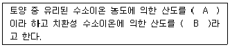
- A : 활산성 B : 치환산성
- A : 잠산성 B : 활산성
- A : 가수산성 B : 잠산성
- A : 활산성 B : 가수산성
(정답률: 64%)
102. 농약의 약해방지를 위한 대책으로 가장 거리가 먼 것은?
- 해독제 이용
- 저농도 약액 살포
- 농약의 안전사용 기준 준수
- 표류비산을 막기 위한 제제의 개선
(정답률: 48%)
103. 식물에서 광보상점 이하가 되면 나타나는 현상은?
- 신장장해, 황화현상
- 반점생성, 개화촉진
- 분지증가, 격년결실
- 근부생장, 광합성 증가
(정답률: 75%)
104. 잡초의 전파 방법 중 사람이나 동물에 부착하여 운반되기 쉬운 잡초는?
- 바랭이
- 민들레
- 소리쟁이
- 도꼬마리
(정답률: 67%)
1⑤. 생애주기비용(LCC)과 관련된 설명 중 틀린 것은?
- LCC분석방법은 개념적으로 매우 복잡하지만 신뢰도가 높다.
- 총생애주기비용의 관점에서 가장 경제적인 대안을 선택하기 위한 일종의 경제성평가 기법이다.
- 시설물의 초기투자, 운영, 유지관리, 해체 및 폐기에 이르기까지 사업의 전체 비용을 합산하여 분석한다.
- 건설사업의 비용절감을 위한 방법으로 VE(가치공학) 수행시 경제적 평가는 LCC에 의존한다.
(정답률: 53%)
106. 레크리에이션 수용능력의 결정인자는 고정인자와 가변인자로 구분된다. 다음 중 고정적 결정인자에 속하는 것은?
- 대상지의 크기와 형태
- 특정 활동에 대한 참여자의 반응 정도
- 대상지 이용의 영향(user impact)에 대한 회복능력
- 기술과 시설의 도입으로 인한 수용능력 자체의 확장 가능성
(정답률: 55%)
107. 자연친화적 저류지의 조성 및 관리에 대한 설명으로 틀린 것은?
- 최종 방류구의 관경이 1.2m보다 클 경우 안전을 위한 접근차단시설 설치를 검토한다.
- 유지관리 및 침강지 청소 등을 위한 유지관리용 도로는 중장비의 접근에 버틸 수 있으며 진입, 운행 및 방향전환이 가능하여야 한다.
- 저류지의 입지는 홍수 시 유량의 집합2소로, 인접지역이 25% 이상의 일정한 경사를 갖는 곳이 적합하다.
- 홍수 시 수위조절 및 첨두유출량, 유출총량을 조절하는 시설을 저류지라 한다.
(정답률: 58%)
108. 목재 썩음병에 관계하는 중요한 효소는?
- Amylase
- Lipase
- Ligninase
- Phosphotase
(정답률: 54%)
109. 다음은 어떤 양분의 결핍시 주로 발생하는 현상인가?
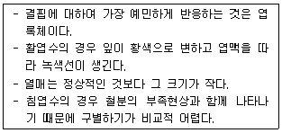
- 망간
- 마그네슘
- 아연
- 칼슘
(정답률: 42%)
110. 비료를 물에 희석하여 직접 살포하는 것으로, 주로 미량원소의 부족시 그 효과가 빨리 나타나는 시비 방법은?
- 표토시비법
- 엽면시비법
- 토양내 시비법
- 수간주사법
(정답률: 73%)
111. 다음 중 조경공사 표준시방서에서 정하는 공사기간의 연장을 요청할 수 있는 경우에 해당하는 것은?(단, 감독자의 승인을 반드시 받아야 한다.)
- 감독자의 지시에 응하지 않을 때
- 시공자가 설계서대로 시공하지 않을 때
- 시공자의 인력수급 곤란 등 사정 발생시
- 부적기 식재, 천재지변 등 공사의 지연이 불가피할 때
(정답률: 74%)
112. 보호살균제(保護殺菌濟)의 특성에 관한 설명으로 틀린 것은?
- 강력한 포자의 발아 억제작용을 나타낸다.
- 약효가 일정기간 유지되는 지효성이 있다.
- 균사체에 대하여 강력한 살균작용을 나타낸다.
- 살포 후 작물체 표면에서의 부착성과 고착성이 우수하다.
(정답률: 53%)
113. 토양 공극량을 높이고, 답압에 대한 저항성을 높이는 역할을 하는 굵은 골재 중 진흙입자를 약 700℃ 고온처리 한 것으로 연회색을 띠는 것은?
- 펄라이트
- 버미큘라이트
- 소성점토
- 중점토
(정답률: 49%)
114. 조경 환경관리 중 자연생태계보호 관련 관리 내용으로 가장 부적합한 것은?
- 공사로 인한 주변환경과 자연생태계의 훼손 및 오염을 최소화하도록 노력한다.
- 공사 중 보호동물, 보호식물 또는 보호식생군락과 희귀생물의 서식지 등이 발견되는 경우에는 감독자에게 보고하고 지시를 받는다.
- 공사용 가도, 진출입로, 임시설치 등을 위한 부지는 주변녹지의 훼손이 불가피하더라도 가장 먼저 선정하여 공사 완료 후 감독자의 승일을 받아야 한다.
- 공사현장의 자생수목으로서 단지조성 들의 기반공사 후 활용이 가능하다고 판단되는 수목은 감독자와 협의하여 굴취, 가식 등의 보호조치를 추하고 단지조성후 활용한다.
(정답률: 77%)
115. 블록포장 산책로의 보수공사에 대한 설명으로 가장 부적합한 것은?
- 노반층이나 모래층은 부설 후 기계전압을 한다.
- 파손되거나 침하된 블록은 모두 걷어 낸 후 폐기처리 한다.
- 모래층을 수평고르기 할 때 여유 모래양의 두께는 5mm 정도가 좋다.
- 블록 설치가 끝난 다음에는 가는 모래를 뿌려서 이음새에 들어가도록 빗자루로 쓸어 넣는다.
(정답률: 68%)
116. 토양의 풍화작용 중 [보기]와 같은 현상은?
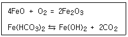
- 산화작용
- 환원작용
- 산성화 작용
- 가수분해
(정답률: 50%)
117. 소나무에 피해를 주는 솔잎혹파리와 관련된 설명으로 틀린 것은?
- 기생성 전적으로는 혹파리반뿔먹좀벌 단일종 뿐이다.
- 연 1회 발생하며, 지피물 밑이나 흙속에서 유충으로 월동한다.
- 피해를 입은 침엽은 신장이 저해되고, 그 기부는 이상비대를 일으켜 충영을 형성한다.
- 침투성 약제 수간주사로 방제할 수 있다.
(정답률: 58%)
118. 자연 중심형 공원에서 일정 분향의 쓰레기를 수거해 올 경우 여러 가지 사은품을 증정하는 것을 보상제도(Positive incentive)라고 한다. 보상제도의 도입시 고려사항으로 가장 부적합한 것은?
- 공원 정상부에 수집소를 집중 설치한다.
- 장려보상은 보조수단이 되어야 한다.
- 보상제도의 목적과 방법을 명확하게 명시한다.
- 보상제도는 이용자의 도덕적 수준을 고려해야 한다.
(정답률: 73%)
119. 다음 중 잠복소(潛伏巢) 사용시 방제가 가장 효과적인 해충은?
- 거위벌레
- 솔나방
- 소나무좀
- 복숭아혹진딧물
(정답률: 56%)
120. 골프장의 코스관리 지침에 대한 설명으로 틀린 것은?
- 가을철 페어웨이 관리는 마지막 시비를 휴면 40일 전까지 실시하는 것이 바람직하다.
- 늦은 여름 기온의 상승과 함께 예고 를 하향조정하여 광합성량을 감소시키고, 뿌리발육을 억제시켜 고온기 동안의 환경내성을 감소시킨다.
- 봄철 그린은 에어레이션 직후 시비하여 비료가 코어 속으로 들어가 근권 토양에 양분공급이 효과적으로 이루어지도록 한다.
- 눈이 많이 쌓여 수목의 가지가 부러지는 피해가 많이 발생하므로 중요 조경수는 적설 후 제설작업을 신속히 실시하도록 한다.
(정답률: 60%)
설명: 그린스워드 계획은 도시 공원을 만들기 위해 중앙공원의 잔디를 보존하고, 외부 식재를 제거하여 차경을 만들어내는 것이 특징입니다. 따라서 "외부 식재의 제거를 통한 차경"은 그린스워드 계획의 특색이라고 볼 수 없습니다. 다른 보기들은 그린스워드 계획의 특징으로 볼 수 있습니다.